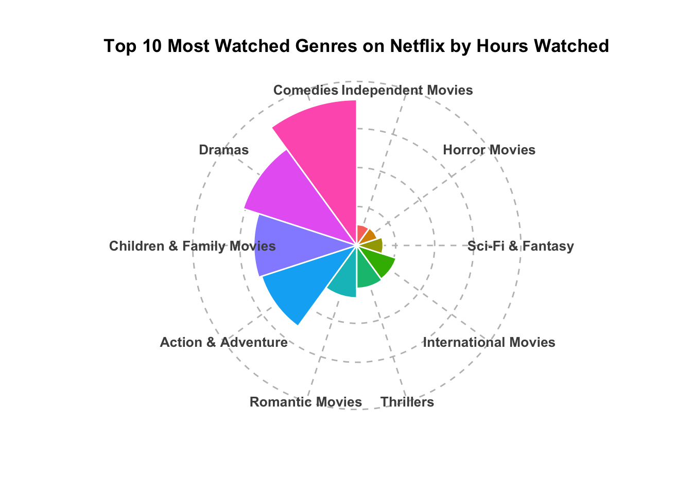
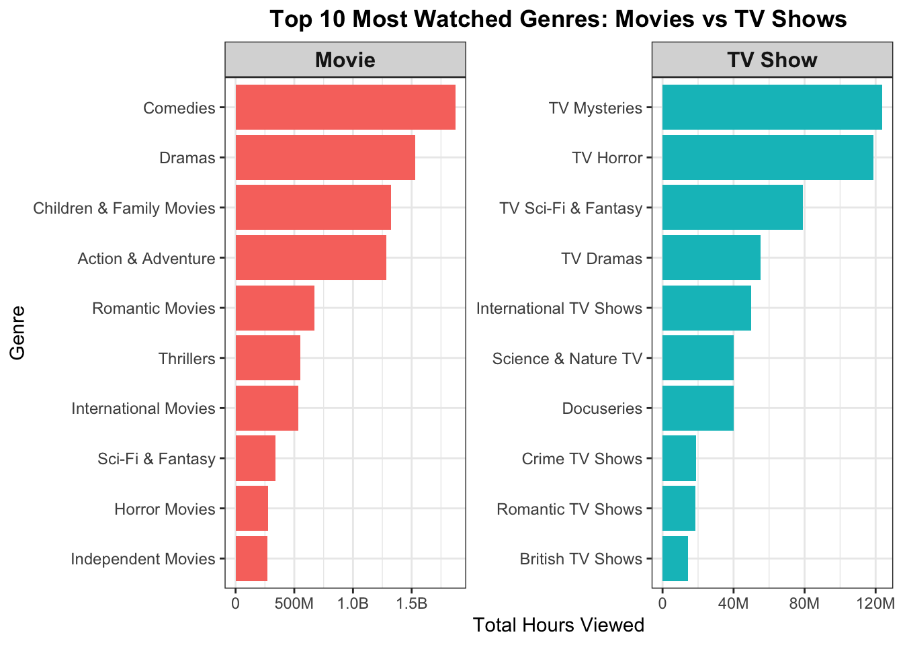
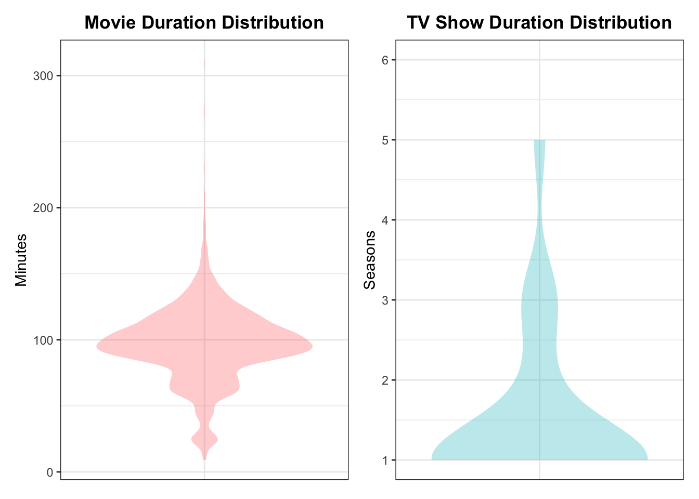

# Loaded required libraries
library(readr)
library(readxl)
library(here)
library(janitor)
library(dplyr)
library(stringr)
library(lubridate)
library(tidyr)
library(ggplot2)
library(plotly)
library(scales)
library(ggridges)
library(patchwork)
# Loaded the datasets
titles <- read_csv(here("data/netflix_titles.csv")) %>%
clean_names()
engagement_report <- read_excel(here("data/Netflix_Engagement_Report.xlsx"),
skip = 5) %>%
clean_names()
# Standardised the titles for merging
titles <- titles %>%
mutate(title_clean = str_to_lower(str_trim(title)))
engagement_report <- engagement_report %>%
mutate(title_clean = str_to_lower(str_trim(title)),
release_year = lubridate::year(release_date))
# Merged datasets using a left join
netflix_clean <- left_join(engagement_report, titles, by = "title_clean") %>%
filter(!is.na(type), !is.na(duration), !is.na(listed_in)) %>%
mutate(
release_year = lubridate::year(release_date)) %>%
select(title = title.x,
release_date,
hours_viewed,
release_year,
type,
duration,
listed_in)
# Added a new column with season removed
netflix_clean <- netflix_clean %>%
mutate(base_title = str_remove(title, ": Season \\d+|: Limited Series"))
# Group by base title + genre/type and summarise
netflix_grouped <- netflix_clean %>%
group_by(base_title, type, listed_in) %>%
summarise(
total_hours = sum(hours_viewed, na.rm = TRUE),
.groups = "drop")
# Separated movie duration (in minutes) and show duration (season count)
netflix_clean <- netflix_clean %>%
mutate(
duration_num = parse_number(duration),
duration_type = case_when(
str_detect(duration, "min") ~ "minutes",
str_detect(duration, "Season") ~ "seasons",
TRUE ~ "unknown"))What Drives Viewer Engagement on Netflix?
Assignment 4 ETC5512
🧠 Research Question
This project explores the question: What drives viewer engagement on Netflix?
The goal is to determine which types of content—such as genres, release formats, or show categories—tend to attract the highest viewership. Specifically, the analysis investigates:
- Whether certain genres (e.g., documentaries, thrillers, reality shows) sustain more viewer attention
- Whether newer titles perform better than older ones
- What common characteristics are shared by the most-watched shows
This question was selected because streaming platforms like Netflix play a major role in everyday entertainment. Gaining insight into what makes certain content more engaging can help illuminate viewer preferences, binge-watching behavior, and content design strategies.
📁 The Data
Two datasets were used in this project:
Netflix Engagement Report (Jan–Jun 2023)
This dataset, published by Netflix, includes total hours watched globally for each title, along with release dates. It reflects real-world viewership patterns and provides a direct measure of audience engagement.Netflix Titles Metadata (from Kaggle)
This dataset contains descriptive information about Netflix content, including title, type (TV show or movie), duration (either runtime in minutes or number of seasons), genre categories, and release year.
These datasets were selected because they are publicly available, nclude the relevant variables needed to address the research question, and are up-to-date as of 2023.
They are appropriate for the intended analysis because:
The engagement data directly captures viewer attention
The metadata allows for grouping by format and genre
Both datasets are observational and structurally compatible after cleanings
Licensing:
The engagement report is published by Netflix and is freely downloadable from the Netflix What We Watched site
The titles dataset is available on Kaggle under a public license
🛠️ Data Collection and Preparation
Download Process:
The engagement data was downloaded as an Excel spreadsheet from the Netflix What We Watched website.
The titles data was downloaded in CSV format from Kaggle.
Data Cleaning and Processing:
The engagement report included a non-tabular header section, which was skipped.
Column names were cleaned and standardized using the
janitorpackage.The
titlecolumn was standardized across both datasets by converting text to lowercase and trimming white space.Only relevant variables were retained, including title, hours viewed, release date, genre, and type.
The two datasets were merged using the cleaned
titlecolumn.Some shows appeared multiple times in the engagement data (e.g., one row per season). These entries were retained for more granular analysis.
The
durationcolumn indicates runtime in minutes for movies and season count for TV shows, which limits direct comparisons across formats.
These steps ensured the datasets were clean, merged, and ready for structured analysis and visualization.
📊 Dataset Creation for Visualisation
Genre Breakdown: Most Watched Categories Overall
To identify which genres attract the highest viewership, multi-genre entries were separated, and total hours viewed were aggregated for each individual genre.
To explore trends across formats, the dataset was further grouped by both type (Movie or TV Show) and genre. The top 10 genres for each format were selected based on total viewing hours, then combined into a single dataset to allow visual comparison. While some genres appeared in both lists (e.g., Dramas, Sci-Fi & Fantasy), others were format-specific—such as Crime TV Shows or Romantic Movies.
This preparation enabled a clear side-by-side breakdown of audience preferences by format, visualised through a faceted bar chart in the blog post tab. The plot reveals which genres perform better within each format and illustrates how structural differences in content influence viewership.
genre_summary <- netflix_clean %>%
separate_rows(listed_in, sep = ",\\s*") %>%
group_by(listed_in) %>%
summarise(total_hours = sum(hours_viewed, na.rm = TRUE)) %>%
arrange(desc(total_hours)) %>%
slice_head(n = 10)
# Preprocess genre order
genre_summary <- genre_summary %>%
mutate(listed_in = factor(listed_in,
levels = listed_in[order(total_hours)]))Genre Preferences by Format
To compare viewership patterns between TV shows and movies, titles were grouped by type, and summary statistics—such as mean and median hours viewed—were calculated.
To further examine genre-based viewing trends across formats, titles were grouped by both type and genre, and total viewing hours were aggregated.
The top 10 genres for each format were then selected to showcase the most popular categories, with overlapping genres retained to allow comparison.
This data was used to create a side-by-side faceted bar chart, displaying the top genres by total hours viewed for movies on the left and TV shows on the right.
The layout highlights which genres perform better within each content format.
format_summary <- netflix_clean %>%
group_by(type) %>%
summarise(
mean_hours = mean(hours_viewed, na.rm = TRUE),
median_hours = median(hours_viewed, na.rm = TRUE),
count = n())
# Full summary of genres by format
genre_all <- netflix_clean %>%
separate_rows(listed_in, sep = ",\\s*") %>%
group_by(type, genre = listed_in) %>%
summarise(hours_viewed = sum(hours_viewed, na.rm = TRUE), .groups = "drop")
# Top 10 Movie genres
top_movie_genres <- genre_all %>%
filter(type == "Movie") %>%
arrange(desc(hours_viewed)) %>%
slice_head(n = 10) %>%
pull(genre)
# Top 10 TV genres
top_tv_genres <- genre_all %>%
filter(type == "TV Show") %>%
arrange(desc(hours_viewed)) %>%
slice_head(n = 10) %>%
pull(genre)
# Combine all 20 genres (with overlap if any)
selected_genres <- union(top_movie_genres, top_tv_genres)
# Final dataset: includes Movie + TV rows for those 20 genres
genre_by_type <- genre_all %>%
filter(genre %in% selected_genres)Duration vs. Format
To explore how content length varies between movies and TV shows, the duration column was cleaned and split into two distinct units: minutes (for movies) and seasons (for TV shows). These values were extracted numerically and stored in a new column called duration_num.
Entries labelled as “other” or missing type/duration values were filtered out to create a consistent dataset for comparing structural differences in content length.
The cleaned dataset was then split by format (Movie vs TV Show) and visualised using violin plots. Each plot displays the distribution of durations across titles, offering insight into how runtime conventions differ by format.
For instance, movies typically range from 90–120 minutes, while most TV shows cluster around 1–2 seasons. This transformation supports a focused visualisation of duration norms and lays the foundation for analysing their relationship with viewer engagement.
duration_clean <- netflix_clean %>%
mutate(
duration_num = readr::parse_number(duration),
duration_type = case_when(
str_detect(duration, "min") ~ "minutes",
str_detect(duration, "Season") ~ "seasons",
TRUE ~ "other")) %>%
filter(!is.na(duration_num))
# Clean duration data
duration_clean <- netflix_clean %>%
filter(!is.na(duration),
!is.na(type)) %>%
mutate(
duration_num = case_when(
str_detect(duration, "min") ~ parse_number(duration),
str_detect(duration, "Season") ~ parse_number(duration),
TRUE ~ NA_real_),
duration_unit = case_when(
str_detect(duration, "min") ~ "Minutes",
str_detect(duration, "Season") ~ "Seasons",
TRUE ~ "Other")) %>%
filter(!is.na(duration_num),
duration_unit != "Other")📚 References
- Netflix. What We Watched: A Netflix Engagement Report. Retrieved from: Netflix
- Shivamb. Netflix Movies and TV Shows Dataset. Retrieved from: Kaggle
- R Packages used:
readxl,readr,dplyr,stringr,janitor,lubridate,here,tidyr
🤖 AI Acknowledgment
Parts of this project, including text refinement, paraphrasing, and grammar correction, were supported by OpenAI’s ChatGPT. The AI was used to enhance clarity, coherence, and flow in the written sections, while all core ideas, analyses, and interpretations remain the original work of the author. Here is the link for the ChatGPT Query.
🎬 Motivation
With Netflix offering everything from gritty thrillers to romantic comedies, it’s natural to wonder: what actually keeps people watching?
This project investigates how genre, content type, and show structure influence viewer engagement. By leveraging real-world viewing data, it uncovers patterns that help explain why some shows become binge-worthy while others fade into the background.
📊 Data
The analysis is based on two combined datasets:
- The Netflix Engagement Report (Jan–Jun 2023), which lists total global viewing hours for each title.
- A Netflix title dataset from Kaggle, providing additional details such as genre, content type (TV show or movie), and duration.
After merging and cleaning, each row in the final dataset represents a specific show or season along with its total hours viewed. This structured dataset allows for meaningful comparisons across genres, formats, and content lengths.
📈 Analysis
1. Top Genres by Total Viewing Time
Most-Watched Titles on Netflix (Jan–Jun 2023)
To ground the genre and format patterns in real examples, this table showcases the five most-watched Netflix releases from the first half of 2023. It includes both movies and TV shows across a variety of genres. These titles demonstrate how diverse content—from action-packed films to true crime docuseries—can generate massive viewer engagement. Displaying this alongside the genre and duration breakdowns helps connect broader trends to familiar, recognisable shows.
| Title | Type | Total Hours Viewed |
|---|---|---|
| Murder Mystery | Movie | 87,900,000 |
| Extraction | Movie | 86,100,000 |
| Stranger Things | TV Show | 77,800,000 |
| The Croods | Movie | 56,400,000 |
| We Can Be Heroes | Movie | 52,800,000 |
To understand what types of content dominate viewer attention, total viewing hours were grouped by genre. Genres were extracted from the listed_in field and cleaned to remove duplicates.

What it shows:
Comedies and dramas led in viewer engagement during the first half of 2023, each accumulating over a billion hours of global watch time. Family movies and action titles also performed strongly, indicating that genres with broad, cross-generational appeal tend to attract more viewers. In contrast, niche categories like horror and sci-fi saw lower total viewing hours, though they still ranked among the top ten.
2. Genre Preferences by Format
To compare how TV shows and movies perform across genres, titles were grouped by both type and genre, and total viewing hours were aggregated. This enabled a direct visual comparison of content preferences across formats.

What it shows:
This chart compares the most-watched genres on Netflix across movies and TV shows. For movies, comedies and dramas led in total viewership, followed by action, romance, and thrillers. In contrast, top-performing TV content leaned toward mysteries, horror, and sci-fi/fantasy — genres often associated with episodic suspense and extended story arcs.
The side-by-side layout clearly illustrates how audience preferences vary by format. While viewers tend to choose movies for emotionally driven or family-friendly stories, they often turn to TV shows for immersive, suspense-heavy narratives. This supports the idea that format influences viewing behaviour, with pacing and structure playing key roles in shaping genre appeal.
Summary Table
While visual plots capture overall trends, this table highlights the five most-watched genres within each format. Action and comedy dominate the movie category, whereas crime and docuseries genres appear more frequently in top-performing TV content—reflecting the structural strengths of episodic storytelling in long-form viewing.
| Format | Genre | Total Hours Viewed |
|---|---|---|
| Movie | Comedies | 1,871,200,000 |
| Movie | Dramas | 1,531,900,000 |
| Movie | Children & Family Movies | 1,321,500,000 |
| Movie | Action & Adventure | 1,282,800,000 |
| Movie | Romantic Movies | 673,300,000 |
| TV Show | TV Mysteries | 123,700,000 |
| TV Show | TV Horror | 118,600,000 |
| TV Show | TV Sci-Fi & Fantasy | 79,000,000 |
| TV Show | TV Dramas | 55,200,000 |
| TV Show | International TV Shows | 50,000,000 |
3. Is Longer Better?
To examine the relationship between content length and viewer engagement, titles were grouped by format and visualised using separate violin plots—one for movie runtimes (in minutes) and another for TV show durations (in seasons).

What it shows:
There is no strong or consistent link between duration and total viewership. Most movies clustered around the 90–120 minute range, with a few shorter and longer outliers—yet both ends of the spectrum showed varying levels of engagement. TV shows were predominantly limited to one-season formats, with minimal variation across the dataset. This suggests that binge-worthiness is not solely determined by length. Elements such as content quality, genre, release timing, and episodic structure are likely more influential in sustaining viewer interest.
🎯 Conclusion
The analysis indicates that viewer engagement on Netflix is shaped by a combination of genre, format, and structural elements, rather than any single factor. While widely popular genres like comedies and dramas consistently attract high viewership, others—such as horror and sci-fi—perform more strongly within specific formats (e.g., TV shows).
The genre breakdown revealed clear distinctions between movies and series, with films leaning toward emotional or family-friendly themes, and shows favouring suspenseful, episodic storytelling. The duration analysis further showed that most movies run between 90–120 minutes, while TV shows typically span 1–2 seasons, though engagement does not necessarily increase with length.
For students exploring data storytelling, this project highlights how public datasets can reveal cultural patterns and viewing behaviour. Even simple preprocessing and visualisation choices—such as splitting mixed-duration fields or disaggregating genre labels—can uncover meaningful insights hidden in plain sight.
📚 References
🧹 Genre Cleaning and Duration Parsing
Tell us about a part(s) of your data processing or analysis that weren’t “sexy” and wouldn’t typically be included in a blog post. (e.g. Was there any data drudgery or time intensive wrangling? Were there any repetitive tasks or manual tasks? If it was easy, describe what made it easy?)
A surprising amount of time went into cleaning the duration and listed_in columns. The genre field contained comma-separated values, which meant entries had to be split, flattened, and reassigned before any meaningful grouping could happen. Similarly, standardising the duration format required parsing mixed strings like “90 min” and “1 Season” into clean numeric values. These weren’t difficult, but they were repetitive and fiddly — and wouldn’t be obvious from the final visuals.
🧩 Redesigning Visuals and Adjusting Scope
Were there any challenges that you faced in conducting this analysis? These may take the form of data limitations or coding challenges. (e.g. Was there anything in your analysis that you were not anticipating when you started? Did you have to change your intended scope? Did you need to master a new skill? Were there any problems you were proud of solving?)
There were multiple rounds of visualisation redesigns. The original plan was to use radar and sunburst plots, but both were dropped — either because they didn’t render correctly or didn’t support comparison well. Plotting duration was especially tricky because the unit was inconsistent (minutes for movies, seasons for shows). Getting those into a shared structure required recoding the logic several times. In the end, simple violin plots gave the most readable output.
🚀 Opportunities for Future Expansion
Tell us about any imperfect parts of your work or how you would like to expand this analysis in future? (We don’t expect you to solve everything in one assignment.)
The dataset only included total viewing hours and lacked contextual metadata such as drop-off rates or regional viewing patterns. As a result, it was difficult to tell whether high engagement reflected popularity, rewatchability, or algorithmic promotion. In the future, it would be useful to bring in complementary data — such as country-level trends, viewer completion rates, or IMDb scores — to round out the picture and understand why certain shows succeeded.
🧪 Iterative Process & Version History
This project was developed through five saved versions, reflecting how both the analysis and communication evolved. Below is a brief summary of what changed at each stage:
Version 1 – Initial Write-Up Only (f6bf9b9)
Drafted Tab 1 with research question, data sources, and collection process
Focused on structuring ideas before adding any code or visuals
Helped clarify project direction and key questions
Version 2 – Data Cleaning and Exploratory Code (85bd5aa)
Added early data wrangling and merging code in R
Began exploring how to standardise duration and split genres
Tested out plots to verify structure, most of which were later refined or discarded
Version 3 – Visualisations and Tables Added in Tab 2 (bf6abd9)
Created final faceted bar charts and violin plots
Added genre and format summary tables
Focused on aligning visuals with story flow and improving interpretability
Version 4 – Tab 3 Reflections and Drafting (d62ef77)
Wrote behind-the-scenes reflections for Tab 3
Described challenges, scope shifts, and future opportunities
Ensured tone was natural and authentic rather than AI-generated
Version 5 – Final Polish, Styling, and Documentation (6d2a93b)
Applied full custom CSS (Netflix theme, tab design, pastel code blocks)
Edited all write-ups for grammar, clarity, and tone consistency
Added AI acknowledgment (ChatGPT query link), and final section in Tab 3
Included README and data description files to complete the submission
All versions of this assignment, including exploratory code, intermediate drafts, and final outputs, are available on GitHub:
GitHub Repository